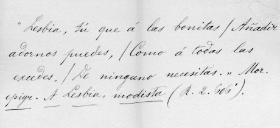
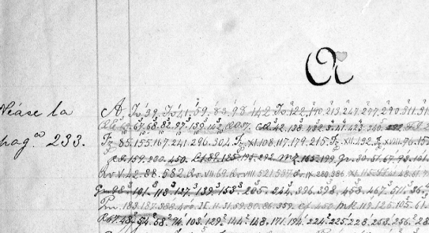

Obras. El Instituto Caro y Cuervo reeditó en 1987 las obras de R. J. Cuervo en cuatro densos tomos, así: tomo I, Presentación por Félix Restrepo, S. J. Estudio preliminar por Fernando Antonio Martínez. Notas a la “Gramática” de Bello. Muestra de un diccionario de la lengua castellana. El diccionario de construcción y régimen (i. El prospecto, ii. Introducción). Castellano popular y castellano literario. Bogotá, Instituto Caro y Cuervo, Biblioteca Colombiana, xxviii, 1987. tomo ii, Apuntaciones críticas sobre el lenguaje bogotano. Bogotá, Instituto Caro y Cuervo, Biblioteca Colombiana, xxix, 1987. tomo iii, Disquisiciones sobre filología castellana. Filología clásica y crítica literaria. Bogotá, Instituto Caro y Cuervo, Biblioteca Colombiana, XXX, 1987. tomo iv. Vida de Rufino Cuervo y noticias de su época. Noticia biográfica de D. Ángel Cuervo. Rectificaciones históricas. Varia. Bogotá, Instituto Caro y Cuervo, Biblioteca Colombiana, xxxi, 1987.
Observaciones al Diccionario de la Academia. Este trabajo fue dividido en tres secciones: Introducción, Observaciones generales y Observaciones particulares. Se inicia este trabajo con la valoración del Diccionario y la descripción de su contenido: “Si el estudio de la lengua nativa es uno de los más interesantes al hombre, el Diccionario de sus voces es el libro más importante de cuantos a este estudio se refieren; porque en él, además de la ciencia gramatical, se contienen en compendio la historia, la civilización y las costumbres de un pueblo en particular, y todos los conocimientos humanos en general”[1]. Estas Observaciones convirtieron a Cuervo en un crítico de la lexicografía, capítulo fundamental de la moderna teoría lexicográfica. Con estas bases metodológicas iniciaría el mayor monumento que se le haya hecho a la lengua española: el Diccionario de construcción y régimen, continuado y editado por el Instituto Caro y Cuervo.
* * *
[1] Anuario, 1935, i, 211.
